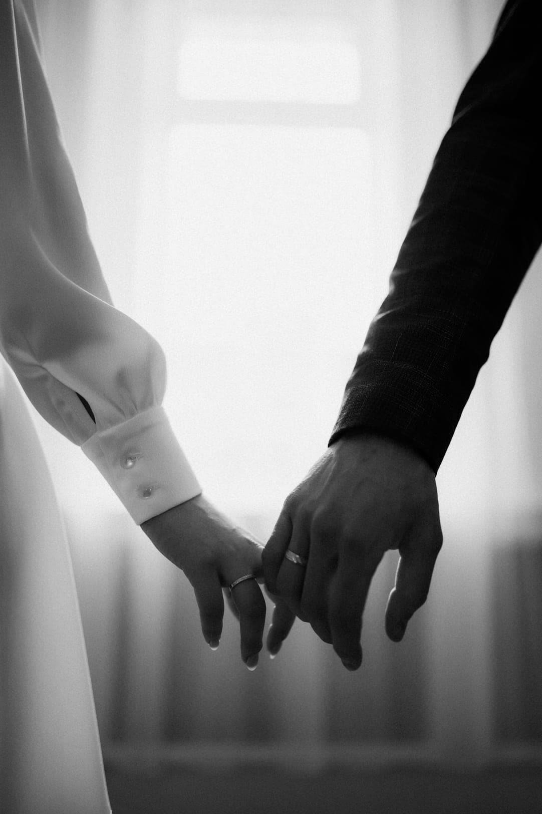
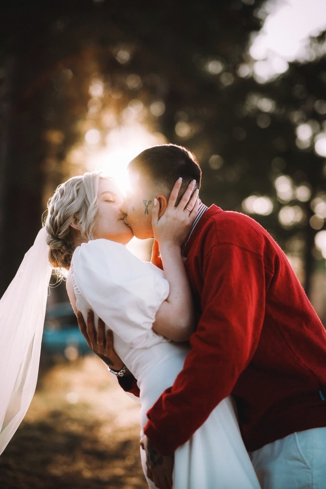

Вариант 1
Строгий чёрно-белый
Крупная плакатная типографика, чередование белых и чёрных экранов, ставка на графичные и чёрно-белые кадры.
Открыть
Вариант 2
Тёплый кинематографичный
Кремовый фон, тонкие линии, крупное фото на весь экран и тёплые закатные кадры. Мягче и спокойнее.
ОткрытьСайт ничего не собирает: ни форм, ни заявок, ни счётчиков. Связаться можно только по телефону или через VK, поэтому фотограф не становится оператором персональных данных.